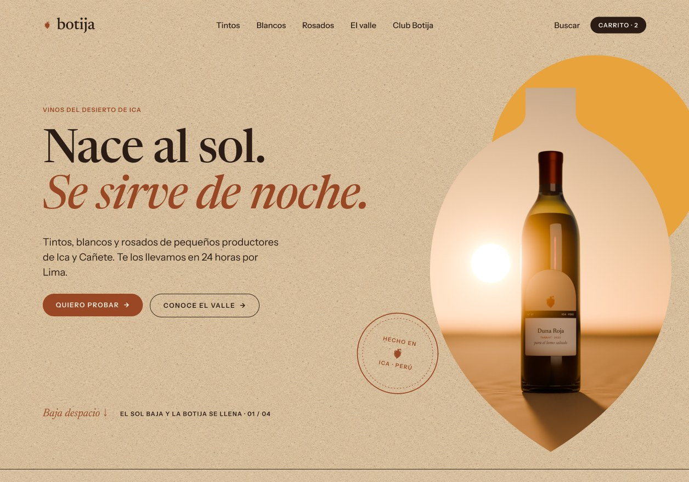
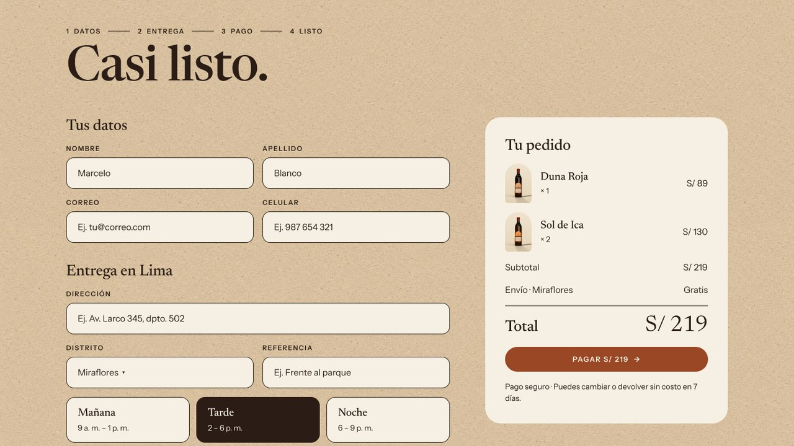
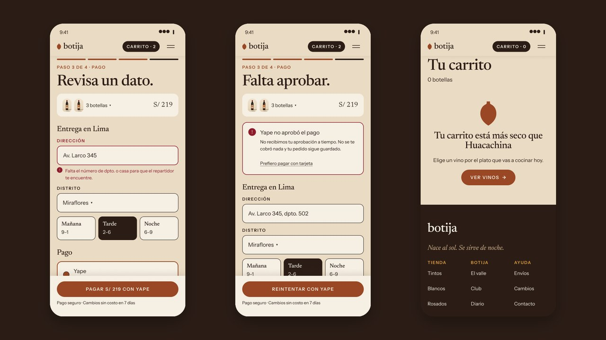

Botija
An online store for wines from small producers in Ica and Cañete, where you choose a bottle by the dish you're cooking and pay with Yape, Plin or card.
Role
UX/UI Designer · personal project
Type
Design proposal · not yet tested with users
Scope
Responsive website · 8 desktop and 12 mobile screens
Tool
Figma

(01) Context and problem
The starting point
Buying wine online often expects you to know about grapes, vintages and tasting notes. But most people don't choose that way: they think about what they're going to eat, or the occasion. Botija is a fictional store selling wines from producer families in Ica and Cañete, and I wanted to design it end to end, from the home page to checkout.
Design question
How might someone who knows nothing about wine pick a bottle with confidence, and pay for it the way they already pay every day?
(02) Visual direction
Born in the sun. Served at night.
01
An Ica identity
The name and symbol come from the botija, the clay vessel where wine is aged in Ica. The colors come from the desert: sand, terracotta and the amber of sunset.
02
Elegant, yet approachable
Headings use Newsreader, a classic serif that reads well on mobile, paired with a simple typeface for body text and buttons. It feels like a wine shop without feeling distant.
03
From day to night
As you scroll, the page shifts from daytime sand to the dark cellar at night. The journey tells the brand's tagline without having to explain it.

(03) Design decisions
Six decisions to shop without knowing wine
01
Choose by dish
On the home page, the store asks "What are you cooking today?". Tap a Peruvian dish, like lomo saltado or ceviche, and the wine that pairs best appears.
02
Every wine with its line
Cards say "for lomo saltado" or "for the barbecue" instead of naming the grape. The tech sheet is still there, collapsed, for those who want it.
03
Add to cart, always at hand
On mobile, the wine page has a fixed bar with quantity and price, so you can add to cart without scrolling back up.
04
Free shipping in sight
The cart shows a progress bar toward free shipping and says when it's been reached. The final cost is never a surprise at checkout.
05
Suggestions to complete the table
The cart suggests other wines that can be added with one tap, without taking the person out of their purchase.
06
Responsible selling
Checkout asks people to confirm they are over 18, and the legal notice appears on every screen, as required for selling alcohol in Peru.

(04) Step by step · Buying a wine
From catalog to checkout
01
Filter the catalog
02
Check the wine page
03
Adjust the cart
04
Choose how to pay

(05) Payment flow
A checkout built for how people pay in Peru
Checkout has four clear steps: details, delivery, payment and confirmation. The amount and bottles are always visible at the top, and the button says exactly how much will be charged and with which method.

A
Yape, Plin and card
The methods people already use. Once one is chosen, the form shows only the fields that method needs.
B
Guided Yape approval
Three steps to approve from the phone, with the remaining time in view and options to resend the notification or switch methods.
C
Delivery by time slot
Instead of an exact time, you pick morning, afternoon or evening. Easier for the store to meet and for the buyer to remember.
D
After paying
The confirmation shows the order status and says a WhatsApp message will arrive when it's close, along with a tip for serving the wine.

Card payment
Yape approval
Order confirmed
(06) Error states
When something goes wrong, the order isn't lost
Every error says what happened and what to do, in plain words and without blaming anyone. If the address is incomplete, it explains why it's needed. If Yape isn't approved in time, it makes clear nothing was charged and offers to pay by card. And the empty cart leads back to the wines, with a touch of humor.

Missing detail
Payment not approved
Empty cart
(07) Validation and limits
01
Not yet tested with users
The design hasn't been tested. The next step is to test the full purchase and the payment flow with real people.
02
Sample brand and data
Botija, its wines, prices and orders are fictional. They show how a real store would work.
03
Design only
The proposal lives in Figma. Turning it into a real store would mean connecting a payment gateway and an order system.